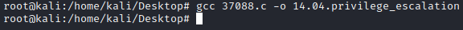

compile an exploit
If we find the source code of an exploit in C and we have to compile it, we can use gcc.
We can do it bot on the
Target or the
Attacker machine.
• If the
Target has gcc installed is better to compile it there remotely because like that we are sure that there are not problems of compatibility.
• If we compile it locally on the
Attacker machine we need to set up gcc accordingly to the hardware of the target.
Download it:
wget https://www.exploit-db.com/download/<exploit-name> #it will be downloaded as 37088.c
Check in the the code(
https://www.exploit-db.com/raw/<exploit-name>) if there are instructions that we have to comment with
/* and
*/ to enable or disable the 32bit or the 64bit part of the payload, depending on if our target is a 32bit or a 64bit system.
example: gcc --version #to see if gcc is installed
gcc -m64 <exploit-name>.c -o <output-name> -pthread #for 64 bit target systems
gcc -m32 <exploit-name>.c -o <output-name> -pthread #for 32 bit target systems
-pthread → Adds support for multithreading with the pthreads library
example: 